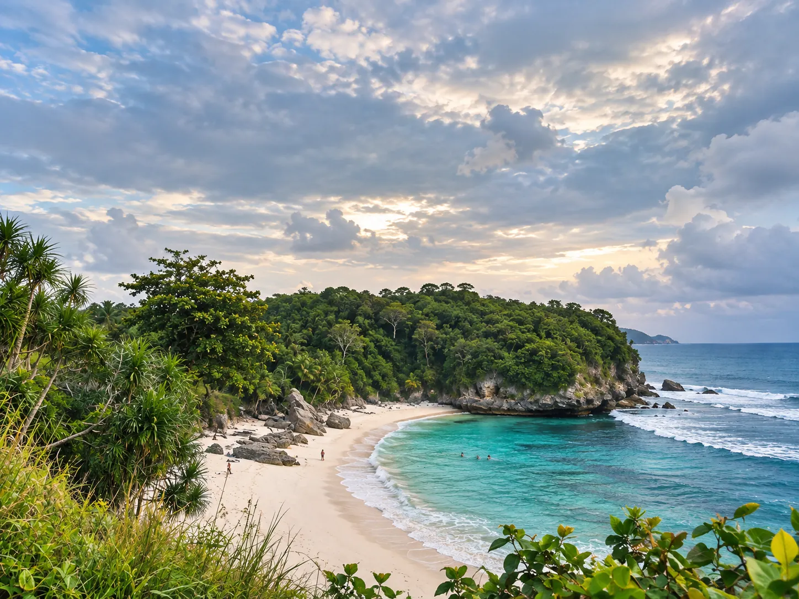

This tour covers most of West Sumba in four days — enough to see the major sites without running, with nights in two different accommodations to limit travel.
Day 1 — Arrival & installation
Morning: arrival flight at Tambolaka airport, welcome by your driver.
Afternoon: transfer to Waikabubak (approx. 45 min), with a first free stop if you wish — Rumah Budaya Sumba, a small cultural house close to the airport, lends itself well to a break after getting off the plane, as does the Talasi Estate for a tasting of coffee and milk from local cashews.
Evening: check-in at accommodation, free dinner. Deliberately light day to recover from the trip.

Day 2 — Ratenggaro & Weekuri lagoon
Morning: early departure to Kampung Ratenggaro, the traditional village facing the ocean — the morning light is particularly beautiful.
Mid-day: swimming at Weekuri lagoon, a few minutes' drive away; light lunch on site or in a warung in the neighboring village.
Afternoon: return to Waikabubak by the coast, with free stops at the beaches you like along the way — the seaside road lends itself well to this.
Do you prefer independence?
This circuit also exists without a guide
Rent a scooter in Tambolaka and follow this route at your own pace.
Day 3 — Weekacura Waterfall & Pantai Marosi
Morning: departure towards the Weekacura waterfall, at the end of a rough track — a driver accompanies this day, the tracks are not suitable for a classic rental vehicle. Swimming in the pool if the flow permits.
Lunch: picnic or stop in a nearby village, depending on the season and what is available locally.
Afternoon: road to Pantai Marosi beach — the timetable for this stage depends directly on the tide, check the day before so as not to arrive at the wrong time. A few minutes away, the small cove of Watu Bella offers calmer water if you prefer to end the day with a leisurely swim.
Day 4 — Praijing, Tarung & departure
Morning: visit the traditional villages of Praijing and Tarung, both a few minutes from Waikabubak — a great way to end the stay on the local culture rather than on the road.
Middle of the day: return to Tambolaka (45 min), with a comfortable margin before the flight.
Afternoon: transfer to Tambolaka airport and return flight.